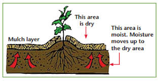

Methods to reduce water consumption in homes
Gardening Tips:
-
Group plants with similar water need together. To read more about this visit : https://www.dianasdesignsaustin.com/2015/06/group-plants-by-water-needs-for-thriving-garden/ Watering a block of plants is more efficient than spraying water over a long row.
-
Use drip irrigation to reduce evaporation and apply water only where needed. The result is water being delivered directly to the root zone of plants, eliminating runoff and losses through evaporation.
-
Mulching is the covering of a soil surface with any organic or inorganic substance to protect it. Mulching of soil can reduce evaporation from the soil surface and reduce irrigation needs by approximately 50 percent.

-
Understand when to water the plants and how much, to prevent overuse of water. To read more about knowing when to water plants, visit the following link: https://www.squaremilefarms.com/post/6-easy-ways-to-tell-if-your-plants-need-watering For instance, research has proved that watering plants in the evening makes them healthier and conserves water from transpiration.
-
Design the garden such that downspouts or gutters are directed toward shrubs or trees.
-
Installing rain gardens helps slow down storm runoff and filter pollutants. They can be customized to feature plants that complement the style of your home.

-
For hardscape surfaces such as driveways, pathways, and patios, choose water-permeable construction materials. Rainwater runoff is reduced using permeable pavers, which enable water to seep through the surface.
Household tips:
-
Check your water meter and bill and talk to family members about setting water conservation goals.
-
Turn the tap off while brushing teeth, shaving, and washing hands. It might not seem like much, but turning the tap off for a minute will significantly affect water consumption.
-
Only run a whole load of dishwasher and washing machine. These appliances use a fixed quantity of water independent of the dishes or clothes inside.
-
Install a low-flow showerhead and keep your showers brief. Turn off the water while you lather up with soap and shampoo and perform a regular check to repair leaks from all shower and tub valves.
-
Use a car wash that recycles water instead of washing your car in the driveway. If that is not possible, wash your car on the lawn so you can simultaneously water your grass.
-
Insulate your hot water pipes to shorten the wait for hot water. Instead of letting the faucet run until the water is cool, keep drinking water in the refrigerator during the summer.
-
Use water-saving bathroom accessories, especially those in water flushing and hand wash systems.
References:
-
xcm219.pdf (colostate.edu)
-
25 Ways to Conserve Water in Your Garden and Landscape | HGTV
-
10 ways to reduce water usage inside your home | Better Homes and Gardens (bhg.com.au)